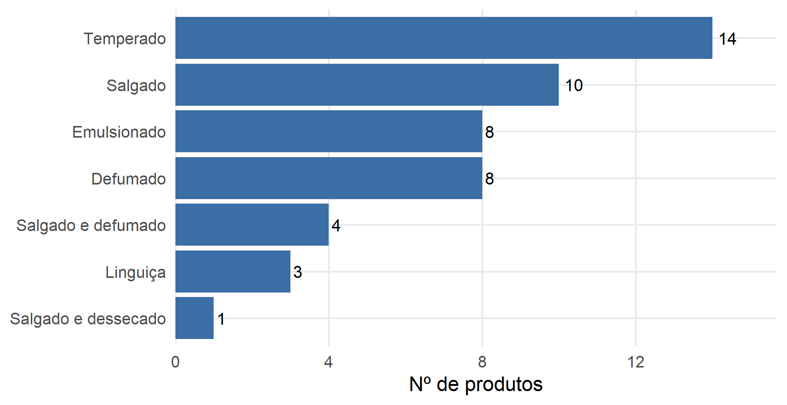
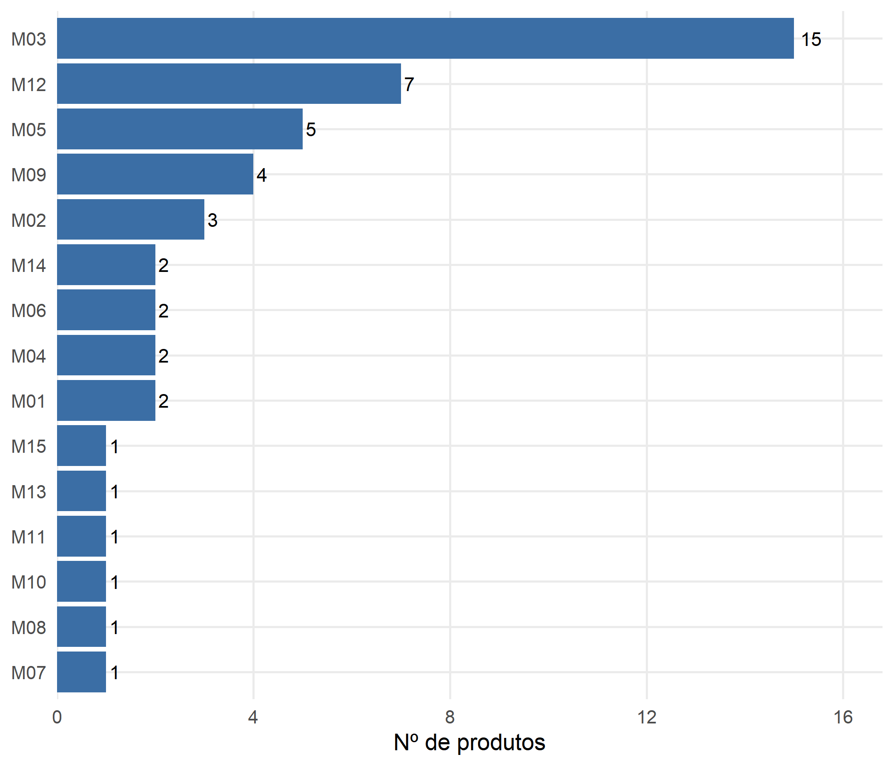
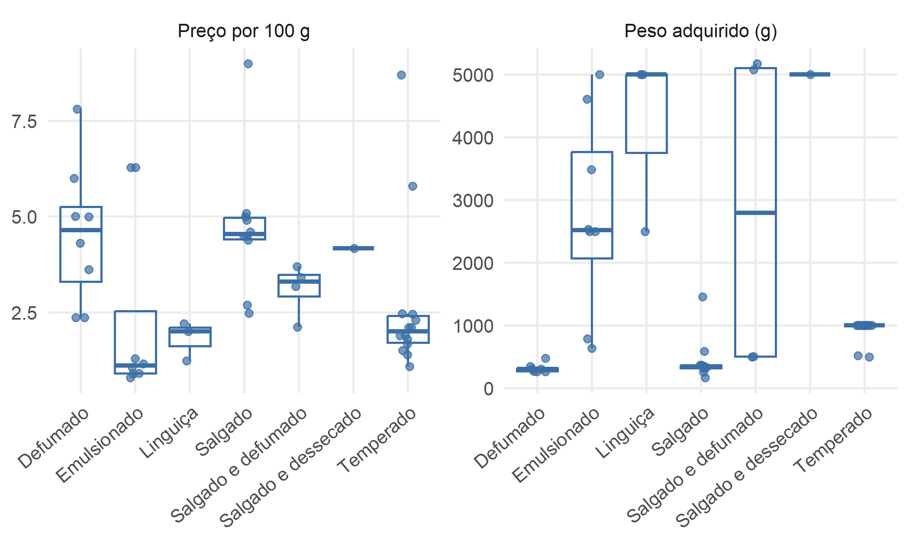
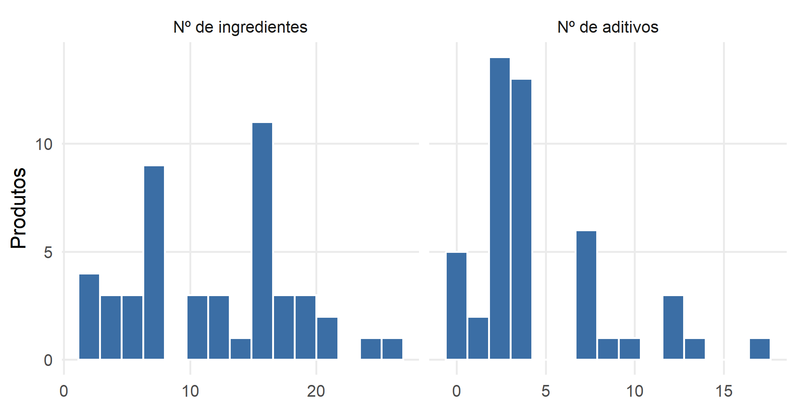
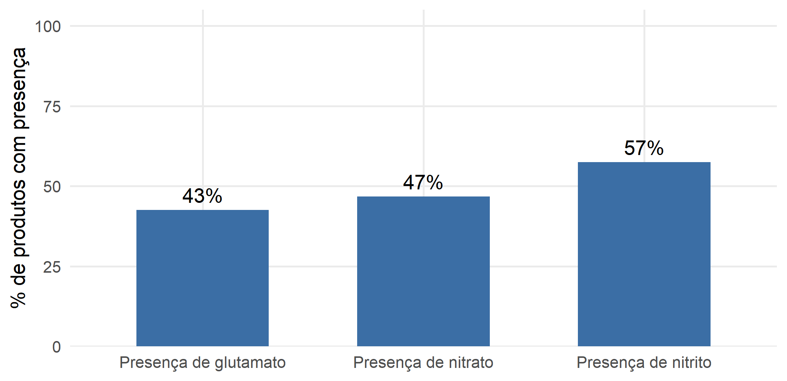

1 · Caracterização da amostra
Amostra: 48 produtos.
Perfil geral dos produtos
Por subgrupo
| Subgrupo | n | % |
|---|---|---|
| Temperado | 14 | 29,2 |
| Salgado | 10 | 20,8 |
| Emulsionado | 8 | 16,7 |
| Defumado | 8 | 16,7 |
| Salgado e defumado | 4 | 8,3 |
| Linguiça | 3 | 6,3 |
| Salgado e dessecado | 1 | 2,1 |
| Total | 48 | 100,0 |
| Nota. n = número de produtos; % = percentual sobre o total de produtos da linha Total. | ||
Por marca/empresa

| Marca/empresa | n | % |
|---|---|---|
| M03 | 15 | 31,3 |
| M12 | 7 | 14,6 |
| M05 | 5 | 10,4 |
| M09 | 4 | 8,3 |
| M02 | 3 | 6,3 |
| M01 | 2 | 4,2 |
| M04 | 2 | 4,2 |
| M06 | 2 | 4,2 |
| M14 | 2 | 4,2 |
| M07 | 1 | 2,1 |
| M08 | 1 | 2,1 |
| M10 | 1 | 2,1 |
| M11 | 1 | 2,1 |
| M13 | 1 | 2,1 |
| M15 | 1 | 2,1 |
| Total | 48 | 100,0 |
| Nota. n = número de produtos; % = percentual sobre o total de produtos da linha Total. | ||
Preço e peso por subgrupo

| Subgrupo | n | Média (DP) | Mediana (Q1–Q3) | Mín–Máx |
|---|---|---|---|---|
| Defumado | 8 | 4,55 (1,84) | 4,65 (3,31–5,25) | 2,36–7,80 |
| Emulsionado | 8 | 2,34 (2,44) | 1,11 (0,91–2,54) | 0,80–6,28 |
| Linguiça | 3 | 1,81 (0,51) | 2,00 (1,62–2,10) | 1,24–2,20 |
| Salgado | 10 | 4,71 (1,76) | 4,55 (4,41–4,97) | 2,48–8,99 |
| Salgado e defumado | 4 | 3,10 (0,69) | 3,30 (2,91–3,48) | 2,11–3,69 |
| Salgado e dessecado | 1 | 4,17 (–) | 4,17 (4,17–4,17) | 4,17–4,17 |
| Temperado | 14 | 2,65 (2,07) | 2,00 (1,71–2,41) | 1,09–8,70 |
| Total | 48 | 3,36 (2,08) | 2,47 (1,87–4,68) | 0,80–8,99 |
| Nota. n = número de produtos com informação; DP = desvio padrão; Q1–Q3 = primeiro e terceiro quartis; Mín–Máx = menor e maior valor. | ||||
| Subgrupo | n | Média (DP) | Mediana (Q1–Q3) | Mín–Máx |
|---|---|---|---|---|
| Defumado | 8 | 320 (71) | 306 (270–317) | 268–482 |
| Emulsionado | 8 | 2756 (1582) | 2516 (2072–3762) | 640–5000 |
| Linguiça | 3 | 4167 (1443) | 5000 (3750–5000) | 2500–5000 |
| Salgado | 10 | 456 (367) | 346 (322–370) | 172–1458 |
| Salgado e defumado | 4 | 2813 (2668) | 2791 (504–5100) | 500–5170 |
| Salgado e dessecado | 1 | 5000 (–) | 5000 (5000–5000) | 5000–5000 |
| Temperado | 14 | 930 (178) | 1000 (1000–1000) | 500–1000 |
| Total | 48 | 1478 (1627) | 1000 (356–1719) | 172–5170 |
| Nota. n = número de produtos com informação; DP = desvio padrão; Q1–Q3 = primeiro e terceiro quartis; Mín–Máx = menor e maior valor. | ||||
Ingredientes e aditivos

| Subgrupo | n | Média (DP) | Mediana (Q1–Q3) | Mín–Máx |
|---|---|---|---|---|
| Defumado | 8 | 7,0 (0,0) | 7,0 (7,0–7,0) | 7,0–7,0 |
| Emulsionado | 8 | 19,1 (4,5) | 19,0 (16,3–21,8) | 13,0–26,0 |
| Linguiça | 3 | 18,3 (3,1) | 19,0 (17,0–20,0) | 15,0–21,0 |
| Salgado | 9 | 4,0 (1,7) | 4,0 (2,0–5,0) | 2,0–7,0 |
| Salgado e defumado | 4 | 11,5 (1,0) | 11,0 (11,0–11,5) | 11,0–13,0 |
| Salgado e dessecado | 1 | 2,0 (–) | 2,0 (2,0–2,0) | 2,0–2,0 |
| Temperado | 14 | 14,6 (3,2) | 15,0 (15,0–16,0) | 4,0–17,0 |
| Total | 47 | 11,8 (6,3) | 13,0 (7,0–16,0) | 2,0–26,0 |
| Nota. n = número de produtos com informação; DP = desvio padrão; Q1–Q3 = primeiro e terceiro quartis; Mín–Máx = menor e maior valor. | ||||
| Subgrupo | n | Média (DP) | Mediana (Q1–Q3) | Mín–Máx |
|---|---|---|---|---|
| Defumado | 8 | 4,0 (0,0) | 4,0 (4,0–4,0) | 4,0–4,0 |
| Emulsionado | 8 | 8,8 (3,6) | 9,0 (6,3–12,0) | 4,0–13,0 |
| Linguiça | 3 | 12,0 (5,0) | 12,0 (9,5–14,5) | 7,0–17,0 |
| Salgado | 9 | 1,3 (1,3) | 1,0 (0,0–2,0) | 0,0–4,0 |
| Salgado e defumado | 4 | 6,3 (1,5) | 7,0 (6,3–7,0) | 4,0–7,0 |
| Salgado e dessecado | 1 | 0,0 (–) | 0,0 (0,0–0,0) | 0,0–0,0 |
| Temperado | 14 | 3,1 (1,4) | 3,0 (3,0–3,0) | 0,0–7,0 |
| Total | 47 | 4,7 (3,8) | 4,0 (3,0–7,0) | 0,0–17,0 |
| Nota. n = número de produtos com informação; DP = desvio padrão; Q1–Q3 = primeiro e terceiro quartis; Mín–Máx = menor e maior valor. | ||||
Glutamato, nitrato e nitrito

| Aditivo | Presença (n) | Válidos (N) | % |
|---|---|---|---|
| Presença de glutamato | 20 | 47 | 42,6 |
| Presença de nitrato | 22 | 47 | 46,8 |
| Presença de nitrito | 27 | 47 | 57,4 |
| Nota. Percentual calculado sobre os produtos com informação (células em branco excluídas). | |||